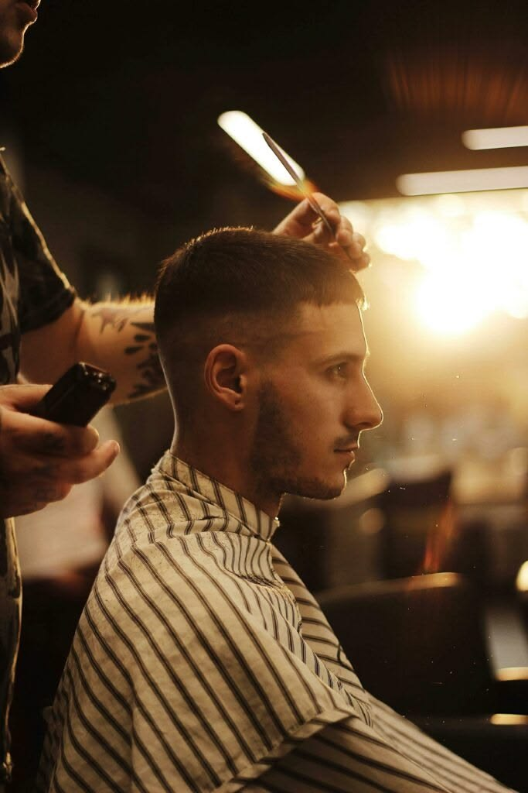
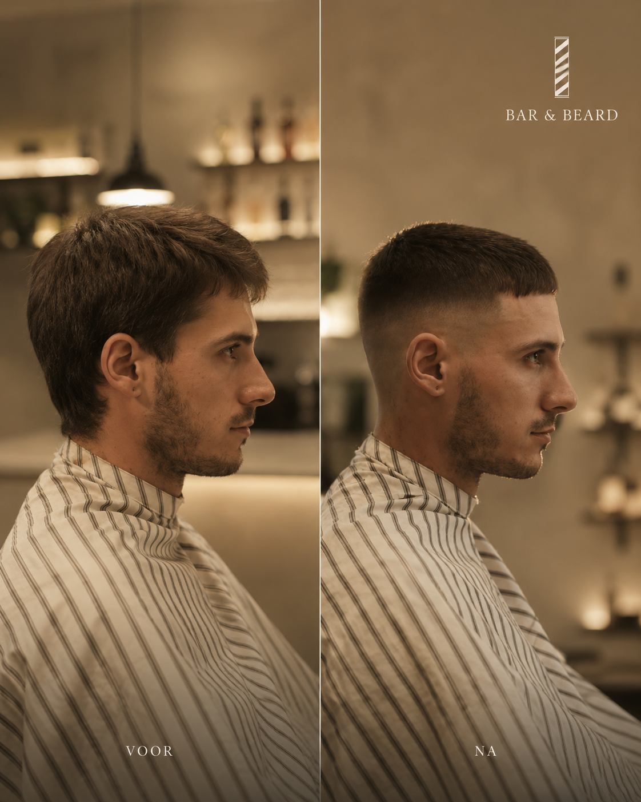
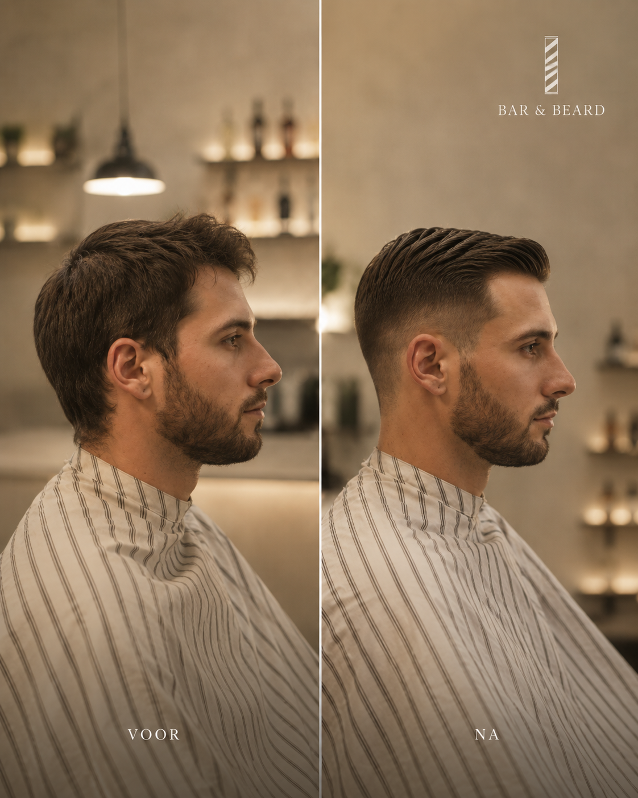
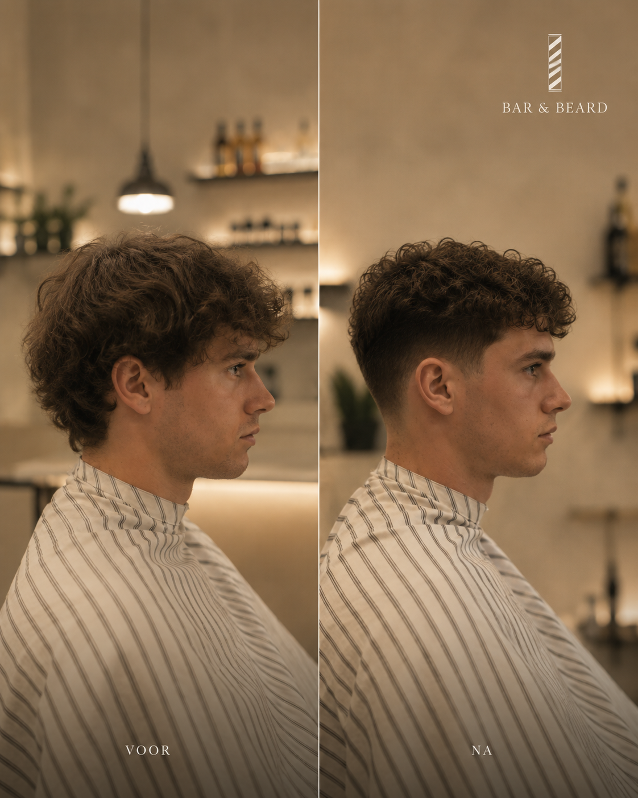

Jij toont
Foto, mood, vorige coupe of duidelijke richting. Alles begint met jouw beeld.

Barbershop in Antwerpen
Toon je referentie. Kies je moment. Wij zorgen voor een nette coupe, strakke afwerking en een afspraak die rustig en op tijd verloopt.
Je krijgt een verzorgde look die past bij je haar, je gezicht en je dag. Zonder stress, zonder gokwerk.
Afspraak
Kies zelf je datum, uur en dienst. Zo weet je vooraf waar je aan toe bent.
Beschikbare momenten voor de gekozen datum.
Hoe we werken
Voor de eerste beweging met de schaar bespreken we je referentie, haarstructuur, lengte, fade en baardlijn. Zo blijft het resultaat persoonlijk zonder dat het willekeurig wordt.
Foto, mood, vorige coupe of duidelijke richting. Alles begint met jouw beeld.
We checken wat haalbaar is voor jouw haar en zeggen vooraf wat we aanpassen.
Afwerking in detail: contour, textuur, baardlijn en styling zonder haast.


Resultaat
Before/after beelden tonen beter dan grote woorden wat het verschil is: vorm, contour en rust in de coupe.

Voor / na

Textuur

Short crop
Diensten & prijzen
Van een nette haircut tot fade, baard en volledige verzorging. Duidelijke prijs, duidelijke tijd, geen verrassingen.
Basis
Snel
Precisie
Meest gekozen
Onderhoud
Add-on
Ritueel
Volledig
Sharp
Premium
VIP Grooming

De bar
De bar is geen gimmick. Het is het rustige einde van je bezoek: koffie, espresso martini of een korte pauze aan de toog terwijl alles weer op zijn plaats valt.
Nazorg
Producten voor haar en baard blijven ingetogen: olie, balm, clay en shave cream met eenvoudige uitleg over wat bij jouw coupe past.


Contact
Neem rechtstreeks contact met ons op. We helpen u graag met uw afspraak, dienst of referentie.